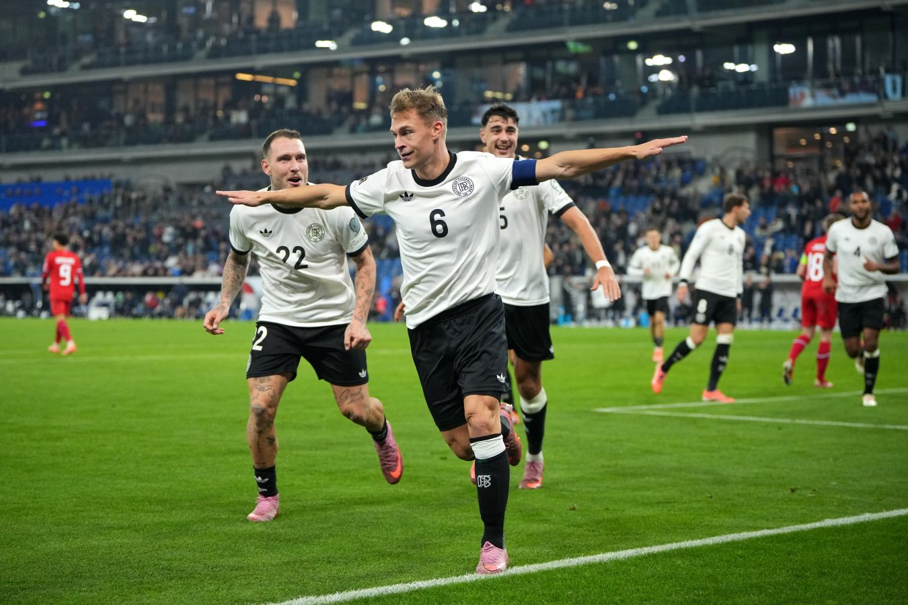

Главные достижения:
Особенности:
Единственный итальянский клуб, никогда не вылетавший из Серии А.
В 2010 году стал первым итальянским клубом, оформившим «требл».
Занимает третье место в истории Италии по количеству выигранных трофеев.

Главные достижения:
Особенности:
Один из самых титулованных клубов мира и второй по количеству трофеев в Италии.
Обладает рекордным количеством побед в Лиге Чемпионов УЕФА среди итальянских клубов.
Знаменит своей академией и воспитанием собственных звёзд, а также приобретением мировых знаменитостей.
Главные достижения:
Особенности:
Самый титулованный футбольный клуб XX века по версии ФИФА.
Обладает рекордным количеством побед в Лиге Чемпионов УЕФА, являясь символом этого турнира.
Был признан ФИФА лучшим клубом мира в XX веке.

Главные достижения:
Особенности:
Является одним из самых титулованных клубов Испании, прочно удерживая статус
«третьей» силы после «Реала» и «Барселоны».
Обладает рекордным количеством побед в Кубке УЕФА/Лиге Европы среди испанских клубов.
Главные достижения:
Особенности:
Один из старейших и самых титулованных клубов постсоветской России.
Является рекордсменом по количеству выигранных Кубков России (10 побед).
Основан при поддержке железнодорожников, чьи традиции и цвета (красно-зелёные) клуб сохраняет до сих пор.
Главные достижения:
Особенности:
Самый титулованный клуб российской Премьер-Лиги в XXI веке.
Единственный российский клуб, выигравший европейский трофей в постсоветскую эпоху.
С 2005 года основным спонсором и владельцем клуба является «Газпром».
Выполнил студент группы Б9123-09.03.04(3) Земсков Иван 2025 год